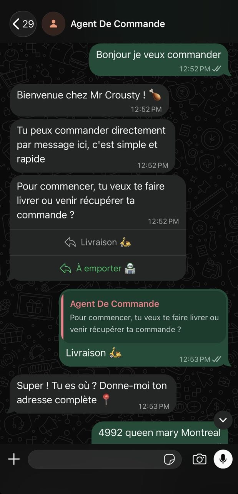

Vous connaissez le chiffre. Quelque part entre 15 % et 30 % de chaque commande passée sur une plateforme de livraison quitte votre compte avant même que vous ayez vu l'argent. Ce n'est pas une rumeur — c'est dans les conditions d'utilisation, et c'est prélevé automatiquement.
Un restaurant qui génère 10 000 $ de commandes en ligne par mois donne entre 1 500 $ et 3 000 $ par mois à une plateforme. Soit entre 18 000 $ et 36 000 $ par année. Sans négociation possible, sans contrepartie supplémentaire, sans que ça change quoi que ce soit à l'expérience que vous offrez à vos clients.
On gère des restaurants. On a vécu ce calcul. Et on a construit quelque chose pour l'arrêter.
Le problème n'est pas la livraison — c'est l'intermédiaire
Les plateformes ont rendu un service réel : elles ont mis des restaurants en ligne à une époque où créer un système de commande coûtait une fortune. Ce temps est révolu.
Aujourd'hui, l'infrastructure existe pour recevoir des commandes directement — sans application à télécharger, sans compte à créer, sans frais de service ajoutés à la facture de votre client. Et sans que vous donniez 30 % de votre marge à quelqu'un qui n'a ni cuisiné ni livré quoi que ce soit.
Ce que les plateformes vendent, c'est de la visibilité et de la commodité. Mais vos clients réguliers — ceux qui commandent deux fois par semaine, ceux qui connaissent déjà votre menu — n'ont pas besoin d'une plateforme pour vous trouver. Ils ont besoin d'un moyen simple de passer leur commande directement chez vous.
WhatsApp est déjà sur leur téléphone
C'est le point de départ de la solution qu'on a bâtie : WhatsApp est l'application de messagerie la plus utilisée au monde. Vos clients l'ont déjà. Ils s'en servent tous les jours. Ils n'ont rien à installer, rien à apprendre.
Un agent IA connecté à votre numéro WhatsApp professionnel reçoit les commandes, pose les questions nécessaires (quantité, options, adresse ou cueillette), calcule le total, confirme la commande et déclenche le paiement — le tout dans une conversation naturelle, sans intervention de votre équipe.

Le client envoie un message. L'agent répond en quelques secondes. La commande arrive dans votre cuisine. Vous encaissez 100 % du montant.
Ce n'est pas une promesse marketing. C'est un système qu'on a mis en place pour nos propres restaurants avant de le déployer chez d'autres.
Ce que ça change concrètement
Pour votre marge : la commission disparaît. Sur 5 000 $ de commandes directes par mois, c'est entre 750 $ et 1 500 $ qui restent dans votre compte au lieu d'aller ailleurs.
Pour votre client : l'expérience est plus simple qu'une application. Un message, une réponse, une confirmation. Pas de compte, pas de mot de passe, pas de frais de service affichés à la dernière étape qui font abandonner le panier.
Pour votre équipe : l'agent gère la prise de commande. Vos employés font ce que seuls des humains peuvent faire — préparer, accueillir, résoudre les imprévus. Pas répondre à des messages répétitifs pour confirmer des horaires ou des options de menu.
Vos clients réguliers n'ont pas besoin d'une plateforme pour vous trouver. Vous payez une commission pour des gens qui vous connaissent déjà.
Ce que l'intégration implique
On ne vend pas un logiciel en libre-service que vous configurez seul un dimanche soir. On installe un système qui fonctionne dans votre contexte, avec votre menu, vos règles, vos heures d'ouverture, votre processus de paiement.
Ça prend deux à quatre semaines selon la complexité de votre menu et vos outils existants. Vous voyez le système tourner sur un cas réel avant qu'il soit branché partout. Aucune mise en service ne se fait sans que vous ayez validé le résultat.
Les plateformes restent disponibles si vous choisissez de les garder pour l'acquisition de nouveaux clients. Le système WhatsApp s'occupe de vos clients existants — ceux pour qui vous payez une commission depuis des mois sans raison valable.
Le calcul avant d'appeler
Prenez vos commandes en ligne du mois dernier. Appliquez 20 % — c'est une estimation conservatrice des commissions combinées si vous utilisez plus d'une plateforme. Ce montant, c'est ce que vous récupérez chaque mois avec un canal de commande direct.
Si ce chiffre dépasse le coût d'intégration dès le premier mois, la conversation vaut la peine d'être tenue.
Un appel de 20 minutes suffit pour voir si votre situation s'y prête. Teza Solutions conçoit des agents IA pour les entreprises qui veulent que ce qui se répète tourne sans intervention — la prise de commande en fait partie. Réservez un appel avec nous pour en discuter.